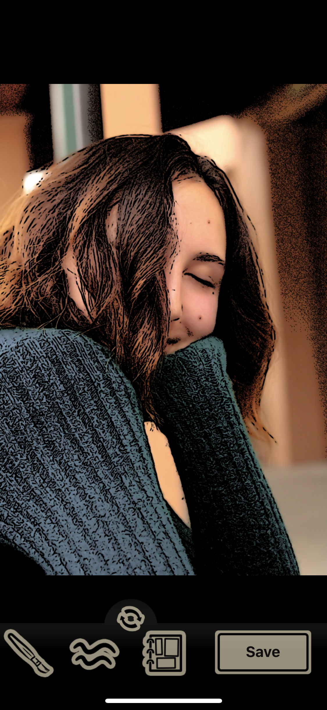
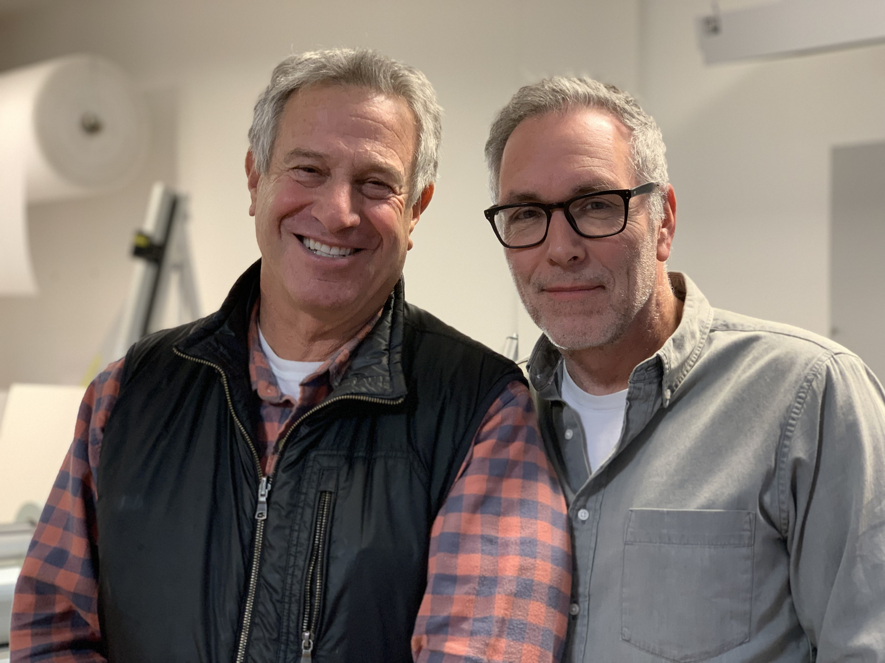
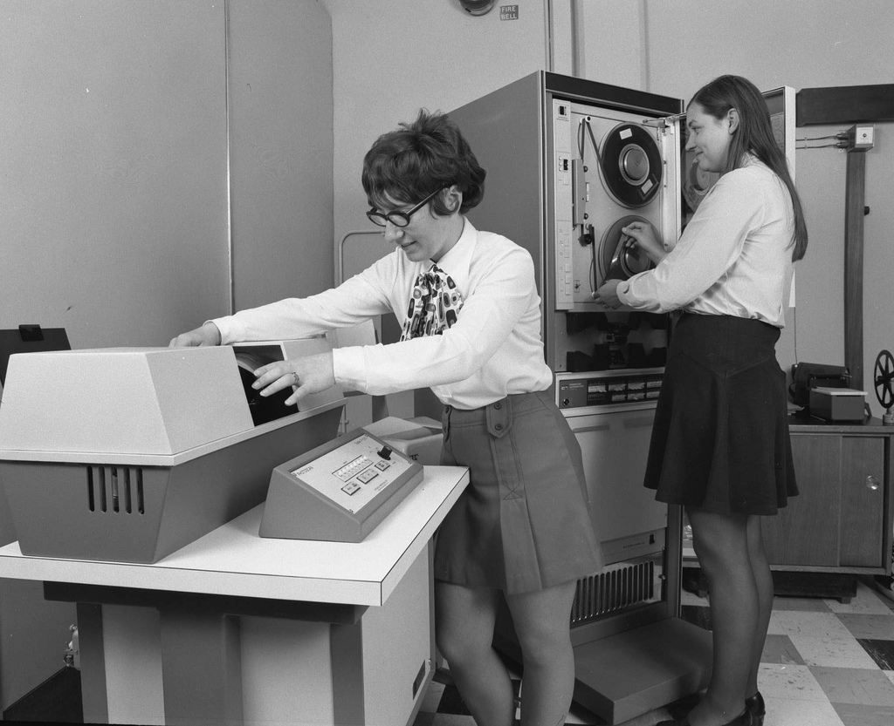

This Teenage Life 😻🎙️
January 2019
Day 1 : 🐌 💬 🦄
- Get know someone🚶🏿🚶♀️
- People Cards 👩🏾💻
- First Recordings 🎤
- Storytelling 📖
Highs + Lows from Break
- Good/bad movie watched?
- Good/bad meal eaten?
- Good/bad moment with family member?
Rules of Engagement
- No meaness
(e.g. no eye-rolling, shooting other people down) - Listen & ask questions
- What's said in this room stays here.
- No recordings shared without permission.
- When recording, don't tap, fidget, interrupt.
- No random air dropping.
Walk and Talk — Come back in 12m.
Go schmooze with someone from another grade who you haven't spoken with. Make sure 1 person has iphone. Ask them questions so you can introduce them when you get back.
Possible Questions:
- Name?
- What do they like to do in their spare time?
- Favorite books, movies, food, animal, etc.
- Pet peeves
- Pets, siblings
- How'd they feel about last semester's project?

People Cards
- With partner, choose still photo (can be your face, an object or something you love)
Mocking up your card on hover effects
The point is to add an effect that says something about who you are or your aesthetic
Let's go through Ashlen's process of mocking up her card
Add any combo of these effects...
- Change image Size (see Cloe)
- Change image Color (see Taylor/Penelope)
- Spin/rotate back and forth
- Song/sound effect plays
- Change image to something else:
- same photo but different effect in Toon Camera
- same photo but it's drawn on, so it looks like drawings magically appear
- baby photo
- photo of your favorite food, flower, activity, cartoon character, emoji, etc.
Ideas for Changing Photo on Hover
- Changing into your pet
- You turn into your favorite cartoon character
- Your favorite food pops up
- If you like the ocean, you modify photo in drawing app so looks like it's underwater

Modify Photo to look like Drawing
Download the "Toon Camera" App for $2 or "clip2comic" for free
Toon Camera — Drawing effect!
Give/text/airdrop:
- ORIGINAL photo (without cartoon effect) and name
- Modified photo (with cartoon effect) which will be front of card
- Image you want for the "on hover" effect
- Mock up drawing with your name, text you want to use for back of card, and name of font you'd like (google fonts)
Back of your card — Ideas!
- 1-2 sentences about yourself — things you like, what you care about, what you value, etc.
- Bullet-point stats about you: Age, favorite emoji, least-favorite condiment, favorite childhood TV show, etc.
- A haiku
- Rupi Kaur style poem
- Favorite quote
A first of mine...
Examples of great storytelling
Miss Divine
Details, tone, relationship of the tellers >> Greatness
Danny and Annie
Characters/relationship >> Greatness
Stories that are great because they're TOLD well.
Santaland Diaries — first 10m
Laura Buxton
Stories that are great because they're miraculous.
First Day Stories
- Go off with 1-3 other people.
- Talk about good, horrible, embarassing, disappointing first days (e.g. school, joined team, trying sushi, got a dog, had a sibling etc.).
- Think of at least one story that you may be willing to share with the group
Examples: The first time/day you...
- Played in a [X] game?
- Performed with your band
- Played your favorite video game
- Decided to speak in class
- Did laundry
- Went camping
- You were an older sibling
- First day of high/middle school?
- First day you said something to a crush you felt shy to talk to
- You changed X habit
Lunch (1 hr)
Rest of Day:
- Recording as big group — firsts
- Analyze
- Recording as two groups here and conference room — choose topic at bit.ly/teenage-topics
- Choosing Roles
Recording Norms
Be Nice
Speak loudly
Don't Interrupt
Check your fidgeting!
Recording (45M)
Be Nice — Speak loudly — Don't Interrupt— Check your fidgeting!
- Played in a [X] game?
- Performed with your band
- Played your favorite video game
- Decided to speak in class
- Did laundry
- Went camping
- You were an older sibling
- First day of high/middle school?
- First day you said something to a crush you felt shy to talk to
- You changed X habit
Roles Sign Up
- Food/ Cookbook
- Hosting
- Sound Editing
- Going around and editing
- Documenting Podcast
- Blog
Cool Food Photography/books (with an angle)
Cloe's Sandwiches
Reflection/Looking Ahead
- Stories you want to do and with whom doing which roles(conference room)
Day 2
- Listen to stories
- Break out into small groups 🎤
- Walkthroughs and Editing
- Lunch 🍱
- River of Lives 🏞️
- 1:1 interviews
- Stories of big, small moments/people 💅
- 2 group record 🎙️
- Reflect 🧠
This American Life: Kid Logic
This Teenage Life: What We Miss About Being a Kid
Brian Read on Action, Reflection, and Stakes...
Lunch - Cook Book - Blog Group
Shakara — Isabella — Edgar — Christian — Emmalynn — Ashlen
Budget: $40
Documentarians
Hannah — Jackson
Capturing Personal Experience
Omari Anderson
Podcast Group 🙌
Hosts: Shreena & Olivia
Olivia — Molly — Shreena — Katlynn — Aly — Sailor — James
Shreena's Ideas
- conspiracy theories
- weird childhood games you made up
- reactions to your (or a family member’s/friend’s) first piece of technology (ex: learning how to use my uncle’s iphone when i was super little and being fascinated)
- weird habits/things you do before traveling
- traveling horror stories (has anything gone wrong/been bad on a trip?)
- food habits/picky eating (does your meal have to be prepared a certain way? are there foods you don’t like and why? ex: i hate when my different foods touch on my plate)
- reality tv (do you think reality tv realistically captures what its like to live in a celebrities’ shoes? do you like reality tv - why or why not? if you were to have a reality tv show, what would you like the show to focus on - your life, your passions, your job, your identity, etc?)
Olivia Ideas
- Special/not special: times you realized you aren't special and times you thought you were
- time you had no friends and were really lonely
- favorite songs and break down their meaning to you
Podcast Group 🖖
Hosts: Riley and Chloe
Harlan —
Penelope —
Avery —
Sasha —
Chloe —
Hayden —
Connor —
Riley
Harlan — Penelope — Avery — Sasha — Chloe — Hayden — Connor — Riley
Riley Ideas
- Things you were told and believed as a kid
- Weird questions your parents asked you.
- When did you realize that you had to be more responsible with your money?
- Favorite childhood shows/why?
- Video games stories: when you started playing them, why you like them etc.
- When did you realize that holiday characters aren't real
- Who inspired you to do something great or bad?
- Are you planning to go to college?
- What do you want to be when you’re older?/why?
- Which parent is your favorite?/ Which parent is the hardest on you?
- Why are the way you are?
- Do you ever go to the gym?
Chloe Ideas
- When was your best Halloween and why
- What is something you are passionate about or would like to be passionate about
- The first time someone has said they liked you or you’ve told your crush you like them
- What’s your dream job and why
Flow for making Podcasts today
- Record 20m/20m
- Listen together, take bulletted notes of each anecdote, discuss order/flow as group
- Make new bulletted list of final anecdotes
- Come back for audacity/garage band walkthrough
Come back in 40m for Audacity / Garage Band walkthrough
Audacity / Garage Band Walkthrough
Editing Podcasts
- 2 Editors: Audacity/garage band — denoise and put anecdotes in order
- 2 Hosts:Write and record interludes
- Music: search on creative commons or make own
Worktime
podcasts — lunch/cookbook — blog — person cards —
River of Life (1hr)
A drawing of your life... so far...and of the small, little things which deeply affected you so far.
- A revelation (e.g.a change in the way you thought about yourself, someone else, etc.
- An election or political event
- A book you read
- A great movie you watched
- Something your parents did that stuck with you.
- Guilt you had about something you did.
- A lucky event which changed your whole life.
Dad, the Fire, and Jimmy
My College Interview + the gates
The Lady at the Insurance Agency
River of Life Shareout
- Share RoL for 5m as they're totally silent. Then ask questions.
- Swap!
Recording One Story
Choose 1 "small thing that affected my life" story and record it into your phone (voice memo) and text it.